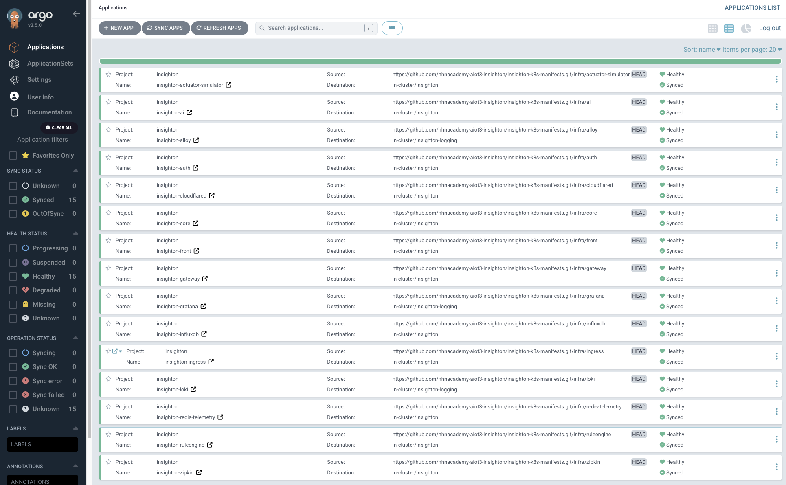
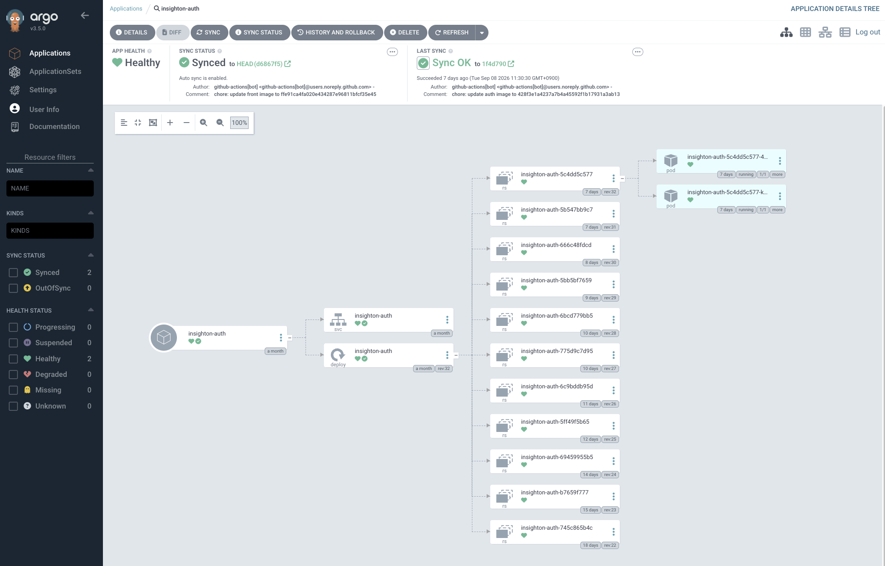
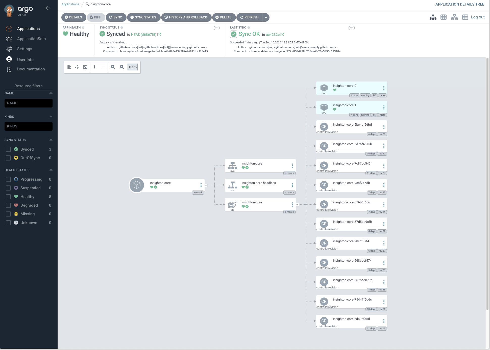
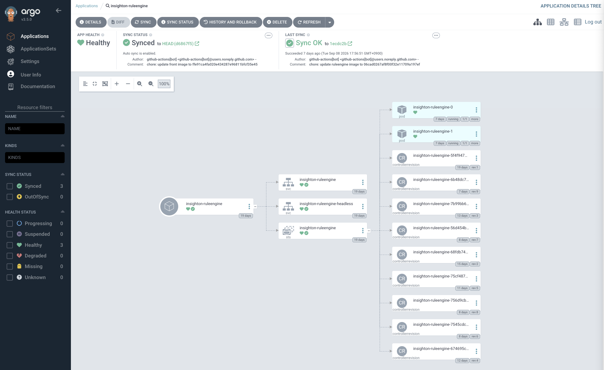
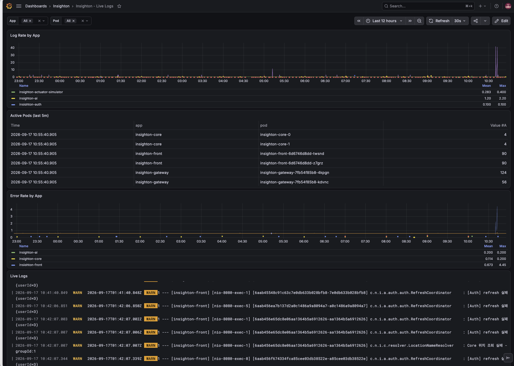
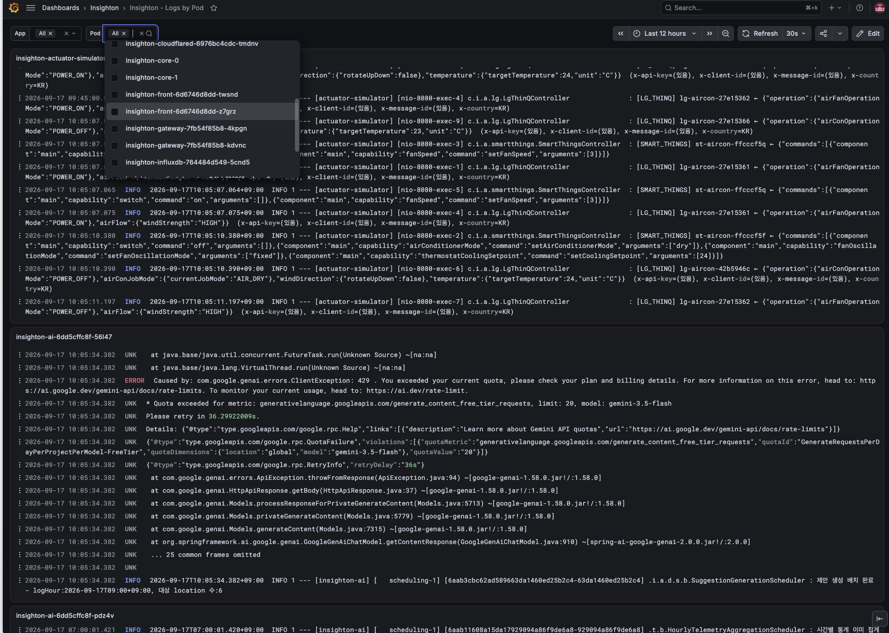

IoT 센서를 MQTT로 수집해 실시간으로 모니터링하고, 자동화(Rule Engine)와 AI 기반 지능형 제어로 자동 대응하는 Multi-Tenant 스마트 오피스 관제 플랫폼을 MSA로 설계·구현했습니다.
Infra 전 영역(Kubernetes 클러스터 구성, CI/CD 파이프라인, GitOps 배포, Observability 스택, 클러스터 운영)을 담당했습니다. 팀 내 유일한 Infra 담당으로서, 인프라 변경 사항이 다른 팀원의 작업을 방해하지 않도록 구조를 설계하는 데 특히 신경 썼습니다. 이 외에도 필요한 지점에서는 Redis 기반 실시간 갱신 기능처럼 서비스 로직까지 직접 구현했습니다.
Cloudflare, Gateway, Auth, Core, RuleEngine, AI 등 MSA 구성 요소 간 통신 구조와 네임스페이스, 각 서비스의 DB/캐시 분리 전략을 설계했습니다.
Docker Compose 기반 단일 서버 배포 환경을 Kubernetes 클러스터로 전환했습니다.
방화벽 정책상 인바운드 포트 개방이 어려운 환경에서, Cloudflare Tunnel(cloudflared)로 아웃바운드 연결만 열어 외부 트래픽을 수신했습니다. 포트 개방 없이 서비스를 노출하고, replica 2개로 이중화 구성했습니다.
클러스터 전역 로그를 Alloy로 수집해 Loki·Grafana로 파이프라인을 구성했습니다.
Core에서 처리한 센서 이벤트를 Redis pub/sub 채널로 발행하고, Front가 SSE(Server-Sent Events)로 구독해 대시보드가 새로고침 없이 실시간으로 갱신되도록 구현했습니다.
실제 서비스 아키텍처입니다. 파란색이 제가 설계·구축한 인프라 영역이고, 회색은 팀원이 개발한 서비스 로직·외부 연동입니다.
같은 다이어그램 위에서 두 가지 흐름을 살펴볼 수 있습니다. 보라색은 클라이언트 요청·조회 경로, 주황색은 센서 데이터(텔레메트리) 경로입니다.
Docker Compose와 Eureka 기반의 배포 환경에서는 서버가 1대였고, 배포 스크립트가 새 컨테이너를 만들고 Eureka 등록 여부를 확인한 뒤 기존 컨테이너를 종료하는 방식으로 무중단 배포를 구현했으며, 서비스 디스커버리도 Eureka 서버를 별도로 띄워 직접 관리했습니다.
하지만 Eureka 등록 이후에도 애플리케이션 초기화나 의존성 연결이 끝나기 전에 요청이 들어올 수 있었고, 기존 인스턴스 종료 시점과 Eureka 등록 해제 시점이 어긋나면 종료 중인 인스턴스로 요청이 전달되는 경우도 있었습니다.
게다가 서버 장애 시 컨테이너 재기동, 인스턴스 확장, 배포 실패 롤백까지 전부 운영자가 직접 처리해야만 했고, 스크립트가 컨테이너별 상태와 이름에 의존해 운영 복잡도가 컸습니다.
Kubernetes로 전환해 Deployment는 배포를, Service는 트래픽 연결을 전담하도록 역할을 분리했습니다.
/actuator/health/readiness 엔드포인트를 readiness probe로 연결하고 periodSeconds: 5, failureThreshold: 3으로 설정해, 애플리케이션 초기화나 의존성 연결이 끝나지 않은 Pod는 Service의 트래픽 대상에서 자동으로 제외되도록 했습니다.
또한 Pod 종료 시 곧바로 컨테이너를 내리지 않고 preStop에 sleep 5를 두어 Service의 endpoint 목록에서 먼저 빠질 시간을 확보한 뒤 종료하도록 구성해, 종료 중인 인스턴스로 요청이 전달되는 문제를 없앴습니다.
아울러 Pod별 resources.requests/limits를 명시해 특정 인스턴스가 Node 자원을 과점하지 않도록 했습니다.
클러스터는 Bare-metal 3-Node로 구성해 관리는 Rancher로, 배포는 ArgoCD 기반 GitOps로 옮겨 git push만으로 자동화했고, 배포 이미지 히스토리를 통해 과거 시점의 이미지로도 손쉽게 롤백할 수 있게 했습니다.
배포 과정에서 Bash 스크립트가 직접 관리하던 컨테이너 기동 순서 및 서비스 등록 상태에 대한 수동 의존성을 제거했고, 장애 Pod의 자동 복구와 선언적인 인스턴스 수 관리, 안정적인 Rolling Deploy가 가능해졌습니다.
Node 3대 중 하나에 장애가 생겨도 Kubernetes의 선언-관찰-조정 루프가 반복되며 부족해진 Pod를 다른 정상 Node에 자동으로 재스케줄링해 스스로 복구하고, Eureka 서버 운영 부담과 SSH 기반 수동 개입 없이도 안정적으로 클러스터 상태를 파악하고 대응할 수 있는 구조로 개선되었습니다.


RuleEngine·Core를 각각 2개 인스턴스로 확장하려는데, Deployment는 모든 Pod가 동일한 설정을 공유하는 구조라 인스턴스마다 다른 역할을 줄 방법이 없었습니다.
RuleEngine은 두 인스턴스가 RabbitMQ의 같은 텔레메트리 큐를 동시에 구독하면 같은 메시지를 중복으로 처리해 룰 평가·알림이 두 번 발생하는 문제가 있었고, Core도 같은 MQTT 게이트웨이 장치에 두 인스턴스가 동시에 연결을 시도하면 clientId 충돌이나 중복 연결이 발생할 수 있었습니다.
결국 두 서비스 모두 "이 작업은 누가 맡을지"를 인스턴스마다 결정론적으로 나눠줄 방법이 필요했습니다.
Kubernetes StatefulSet이 각 Pod에 붙여주는 고유 순번(-0/-1)을 인스턴스 식별자로 활용해, RuleEngine과 Core 모두 이 값을 기반으로 역할을 결정론적으로 나눌 수 있게 했습니다.
RuleEngine은 이 순번으로 짝/홀수 텔레메트리 큐를 나눠 맡고, 상대 인스턴스에 장애가 생기면 자동으로 큐를 인계받아 처리합니다.
Core도 같은 순번을 게이트웨이 커넥션 소유권 결정에 활용해, 장애 시 다른 인스턴스가 대신 연결을 넘겨받도록 구현되어 있습니다.
StatefulSet은 headless Service(clusterIP: None)로 구성해 각 Pod가 engine-0.engine-headless처럼 안정적인 DNS 식별자를 갖도록 했고, 이 안정적인 식별자가 두 서비스 모두 순번 기반 로직을 쓸 수 있는 전제 조건이었습니다.
StatefulSet은 Pod가 재시작되거나 재배포돼도 항상 같은 순번을 다시 받기 때문에, 인스턴스를 늘리거나 교체해도 수동 설정 없이 각자 순번에 따라 자기 몫을 자동으로 할당받습니다. 확장이나 배포 때마다 인프라 담당자가 인스턴스별 설정을 손으로 맞춰줄 필요가 없어졌습니다.
한 인스턴스에 장애가 생겨도 다른 인스턴스가 자동으로 그 몫을 인계받고, 복구되면 다시 돌려주는 방식으로 운영자 개입 없이 안정적으로 동작합니다.
StatefulSet과 headless Service 조합은 이후 인스턴스별로 다른 역할이 필요한 다른 서비스에도 그대로 재사용할 수 있는 인프라 패턴이 되어, 매번 새로 설계하지 않아도 되는 기반을 마련했습니다.
다만 RuleEngine은 짝/홀수 2분할 구조라 지금은 replica 수를 2로 고정해서 운영 중이고, 3개 이상으로 늘리려면 애플리케이션 쪽 큐 분배 로직을 N개 기준으로 다시 설계해야 합니다. Core는 나눗셈 기반이라 구조적으로는 확장 여지가 있지만, 3개 이상으로 실제 검증해본 적은 아직 없습니다.


Docker·Eureka 기반 단일 서버 환경일 땐 Filebeat로 로그를 수집해 Elasticsearch에 적재하고 Kibana로 조회하는 ELK 스택을 사용했습니다.
Kubernetes로 마이그레이션한 뒤엔 Promtail+Loki 조합으로 바꿨는데, Grafana Labs가 Promtail 지원 종료(EOL)를 예고한 걸 알게 되면서 로그 수집기를 다시 교체해야 했습니다.
여기에 더해 Pod가 재배포될 때마다 Grafana의 Pod 선택 목록에 예전 Pod까지 계속 누적돼 남아 있어, 지금 실제로 떠 있는 Pod가 어떤 건지 헷갈리는 문제도 있었습니다.
Promtail 대신 Grafana의 공식 후속 에이전트인 Alloy로 로그 수집기를 교체하고, Pod 목록 조회 방식도 Loki가 아닌 Kubernetes API를 직접 쓰도록 바꿨습니다.
Node마다 Alloy를 DaemonSet으로 배포해 각자 자기 Node에서 도는 Pod의 로그만 필터링해 읽고, app·namespace·pod·node 라벨을 붙여 중앙 Loki로 전송하도록 구성했습니다.
Grafana의 Pod 선택 변수는 전용 grafana-k8s-viewer ServiceAccount로 Kubernetes API(/api/v1/namespaces/insighton/pods)를 fieldSelector=status.phase=Running으로 직접 조회하도록 바꿔, 지금 실제로 Running 상태인 Pod만 목록에 나오게 했습니다.
Promtail EOL 이슈 없이 Grafana 공식 지원 에이전트로 넘어가서 로그 수집 파이프라인을 계속 유지보수 가능한 상태로 만들었습니다.
Pod가 재배포·재시작돼도 Grafana Pod 목록엔 항상 지금 실제로 떠 있는 Pod만 나오게 되어, 로그 조회 시 예전 Pod와 헷갈리는 일이 없어졌습니다.


Infra 전 영역(K8s 클러스터, CI/CD, GitOps, Observability) 담당
GitHub Project(Kanban)로 일정 관리, Notion으로 문서화, 데일리 스크럼과 주간 회의로 진행 상황 공유
insighton-infra라는 별도 저장소에 CI/CD 로직 전체를 중앙화하고, 각 백엔드 서비스 저장소에는 이 저장소의 워크플로우를 호출하는 얇은 GitHub Actions 워크플로우만 추가했습니다. 그 결과 CI/CD 파이프라인이 수정되거나 Docker Compose → Kubernetes로 인프라 전체가 마이그레이션되는 동안에도, 팀원들은 main에 PR을 머지하기만 하면 자동으로 배포되는 경험을 그대로 유지할 수 있었습니다. 변경사항을 매번 설명하고 대응을 요청하는 대신, 인터페이스(워크플로우 호출 한 줄)만 안정적으로 유지해 커뮤니케이션 비용 자체를 없앴습니다.
Infra 담당자로서 직접 설계한 아키텍처를 바탕으로, Eureka·Docker의 개념부터 Kubernetes를 도입한 이유, 이중화, 무중단 배포 원리까지 팀 전체를 대상으로 기술 세미나를 진행했습니다. 인프라 배경 지식이 없는 팀원들도 각자 개발한 서비스가 어떤 인프라 위에서 동작하는지 이해하게 되면서, 이후 배포·장애 대응 논의가 더 매끄러워졌습니다.